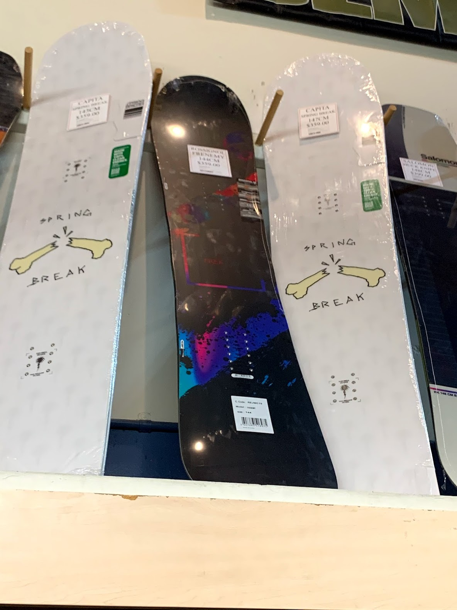

Serena choi
I am currently enrolled as a first year at the University of California, Riverside. As of now, I am a declared Neuroscience Bachelor of the Arts major in the College of Humanities, Arts, and Social Sciences. I am interested in pursuing my studies of the human mind, working with both the brain and cognition. Right now I am pursuing my breadth courses by taking a variety of courses that are outside of what I will need to take in order to fulfill the requirements for my current major. Taking these courses allows me to broaden my knowledge on various subjects and introduce me to new things. I may change my field of study in the future but as of now I am still interested in the brain and how things work. I am especially interested in human behavior and cognition, the way we behave and think. In the future I would like to work in some form of research in order to gain the skills I would need to further my studies
Previous jobs I have held have been working in the retail industry. Most recently I worked for the company Vans, in one of their retail stores as a sales associate. I have held many other retail jobs for about 4 years now and am very experienced in many aspects of how to run a sales floor. My previous jobs have helped me learn many vital skills that are not only applicable to the world of retail but many other disciples as well. I am also well versed in communication and organizational skills. I have held many leadership roles throughout my life and can bring many of those aspects to wherever I am. Although my retail experience does not necessarily have to do with my current field of study I am pursuing, it has taught me many things I can apply to my future work.
In the future I hope to someday work in a field where I can interact with people. I have lots of experience through volunteer work with children who are disabled or mentally handicapped and this has opened my eyes to a potential field I want to work in. In the future I would like to work in the realm of child development, whether that be behavioral therapy for those who face certain disabilities or challenges or work in the field of aiding those who face similar challenges through adult life. Regardless of age, I do know that I am passionate about helping people and learning more about the cognitive patterns of human behavior and the anomalies that may occur.
Experience
Sales Associate
• Organized and stocked shelves with products
• Facilitated keeping areas neat while working and returning items to correct locations
• Demonstrated and explain products to meet customers needs
Sales Associate
• Promoted new product and merchandise
• Assisted customers with fittings and style
Ticktocker
• An organization devoted to serving the community
• Holding many leadership roles, such as secretary and various philanthropy chairs
• Recording secretary, recording meeting minutes and taking attendance
Education
UC Riverside
Portfolio
